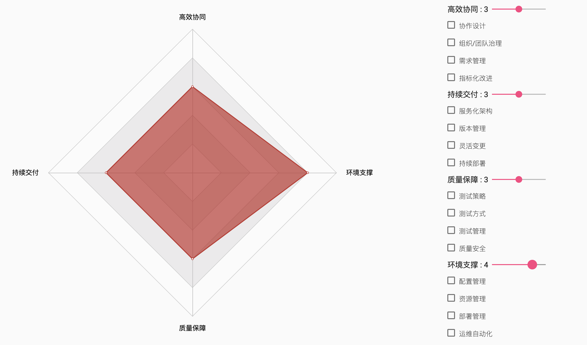
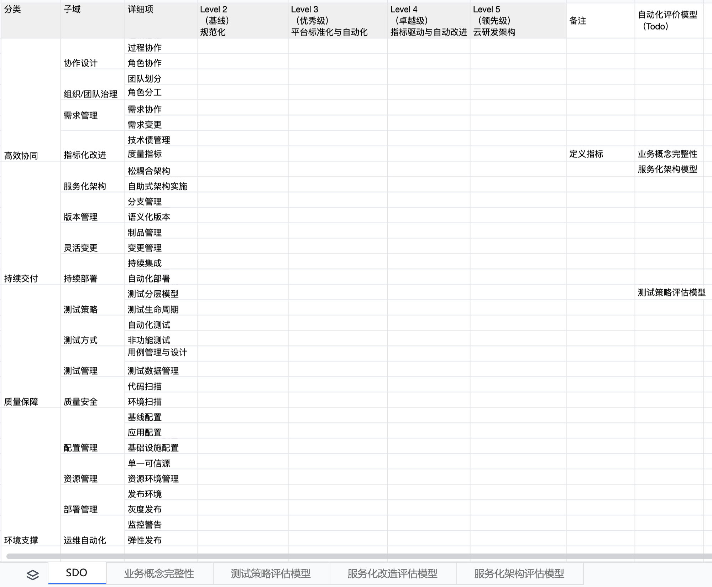

DevOps 转型是一件颇有挑战性的工作。它并不是一个简单的工具或者平台的使用、运维能力提升。特别是在中大型组织中，它涉及到一系列的组织问题。
而传统的 DevOps 成熟度模型过于撕裂与分散，无法适用于大型组织。DevOps 厂商与云厂商的 DevOps 成熟度模型过于关注如何卖云基础设施，无助于企业进行高效的协作。
为此，我决定在 Ledge 的基础上，设计上开源的、面向大型组织的 DevOps 能力成熟度模型。它是基于我们所提炼的一系列研发效能模型，抽象而成的成熟度模型。
在设计与划分时，我们考虑的维度有两个：
- 规模化。对于中大型组织而言， DevOps 模型在设计时，要关注于流程化/标准化、工具化/平台化四个规模化因素。即选取合适的试点团队，构建组织的 DevOps 能力，再进行规模化推广。
- 组织协作性。在中大型组织内原先已经有一系列的 DevOps 相关的工具/平台，如看板、流水线等。这些工具/平台需要进行调整，以确保更好的协调性，从而更快的响应业务变化。
所以，在这个规模化的 DevOps 设计与实施，我们总结出了 DevOps 的四大核心能力，又称为四大基石。

其中，高效协同是四大基石中最重要的一部分，DevOps 的本质所在。
高效协同。协同指的是人与人之前的协同，即业务与技术、技术与技术、技术与测试、测试与运维等。在标准化上，我们关注于：协作设计，从流程上尽可能减少浪费；组织/团队治理，优化团队与组织结构。在平台上，我们关注于：需求管理，保障需求过程的概念完整性传递，如分析、拆分、协作；指标化改进；即将协同平台作为度量指标的展示平台，用于持续性的改进，诸如于技术技术债等。
持续交付。持续交付是指能够按需快速、安全且可持续地发布各种类型的更改。在标准化上，我们关注于：服务化架构，即实现类似于微服务架构、服务导向架构的架构化方式，实现技术架构能快速响应业务变化；版本管理，即从源码源头开始对版本进行标准化，通过分支管理、语义化版本等方式实现。在工具上，我们关注于：灵活变更，即通过平台管理变更与制品；持续部署，则是与变更相关关联的持续集成与部署。
质量保障。质量保障是指为最终用户提供高质量的软件产品。在标准化上，我们关注于：测试策略，即结对质量左移设计测试生命周期，设计测试分层模型进行指标化引导 ；测试方式，定义自动化测试、手动测试的类型、时机、准出标准等。在平台化上，我们关注于：测试管理，诸如于用例管理与设计、测试数据管理；质量安全，则是针对于代码、环境等进行自动化质量与安全相关的扫描。
环境支撑。环境支撑是指用于支撑体系所需要的基础设施与运维体系。在标准化上，我们关注于：配置管理，即将基础设施代码化后，进行相应的基线配置管理、应用配置等；资源管理，即对环境的管理，以及各环节所需要的资源和环境进行管理。在平台上，我们关注于：部署管理，即对于发布环境的管理，以及诸如灰度发布等高级部署方式的管理；运维自动化，在运维上进行自动化的监控和警告，并支持更好的弹性发布，诸如于高可用性等。
在规划完 DevOps 子域之后，我们可以根据组织的规模，细分子域以及对应的详细项。如在协作设计上，可以进一步地对过程协作与角色协作进行设计。如下图所示：

考虑到这是一个成熟度模型，所以我们还需要定义成熟度的级别。通常来说，一个成熟度模型应该是从 1 ~ 5，又或者是 0 ~ 4 四个级别。
对于规模化的组织来说，我们只需要 4 个级别，即只存在 2 ~ 5 个级别。从流程标准化和平台化，我们已经消灭级别 1 的存在，它们都是不合规的。与此同时，从标准化和平台化的层面来看，事实上，我们也不存在级别 5，因为它们过于灵活和超前。
所以，它只需要三级模型：
Level 2，规范化。从原始需求的产生到需求的上线，全部遵循组织内定义的规模标准。需求协作的过程透明化，流程明确，流转自动化；持续交付上，采用组织所定义的实践，如语义化版本，制品来源与产出可信等；在质量上，采用依据组织定义的模型设计测试策略等；在环境上，平台能支撑起规范化所需要的设计。
Level 3，平台标准化与自动化。将规范化的内容，逐一在平台上进行标准化，即定义多种技术实践，只能从中二选一，或者三选一。四大基石，都通过这一系列标准来进行自动化。唯一值得商榷的一点是持续交付上，我们需要一个松耦合的架构，才能支撑起单个团队的快速交付，诸如于微服务架构、插件化架构等。
Level 4，指标驱动与自动改进。建立一系列的度量模型，对于软件开发过程进行全面的度量。与此同时，团队与平台根据这些定义的对系统和平台进行优化。如在环境支撑上，对于应用状态的实时监控，实现自动化弹性。
对于第 5 级来说，视不同的组织情况，略有不同。如我们所定义的是：
Level 5，云研发架构。构建基于云端开发时的基础设施架构，诸如于云研发架构、Serverless、Typeflow、Darklang 等，实现基础设施的自动化与架构的高度解耦。在质量上，对运行时监控，实现自动化测试编写，对代码进行静态分析，实现精益测试；在协同上，通过构建领域特定语言，实现需求生成代码骨架；在环境上，自动实现灰度发布等特性。
欢迎一起讨论规模化的 DevOps 模型：
相关的模型也可以从上述的地址获取。